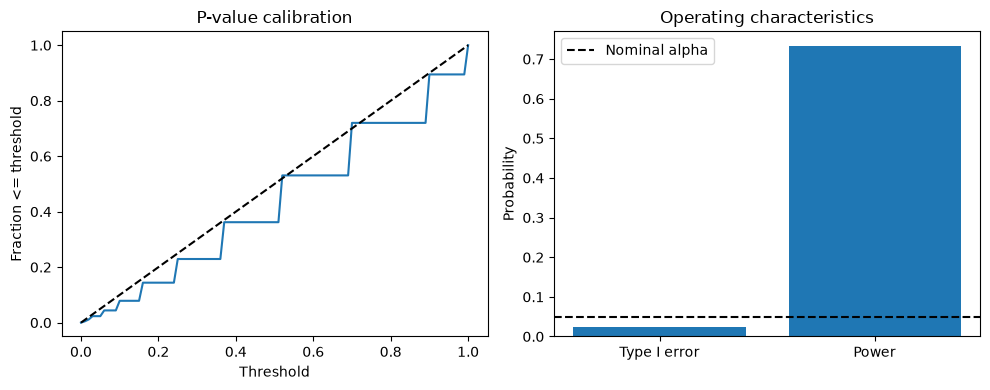
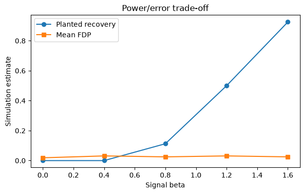

19. Chapter F. Statistical Simulation and Validation#
19.1. Learning Objectives#
After completing this chapter, you should be able to:
Design a known-truth generator with null and alternative conditions.
Distinguish complete-null calibration, mixed-null FDR, and planted-mechanism recovery.
Estimate Monte Carlo uncertainty from independent replications.
Perform factorial sensitivity checks for overlap, persistence, and signal strength.
Write an honest interpretation of when a randomization reference fails.
Connection to STARM: The examples mirror the binary outcome, fixed antecedent indicators, lagged transactions, and overlapping spatial supports in the STARM manuscript. They are teaching examples, not reproductions of manuscript results.
Teaching philosophy: start with the general statistical problem, build mathematical intuition, and use STARM as one illustrative case study. The new sections precede the original computational labs.
19.2. Why Study This? — Motivation, Scope, and Real-World Problems#
A method may look reliable on one dataset yet systematically produce false positives, miss weak signals, or break under changed sampling conditions. Simulation-based validation (模拟验证) uses controlled data-generating processes to measure these properties when truth is known. It is central to new statistical estimators, algorithms, medical trial designs, and spatial inference methods.
Questions it answers: Are p-values calibrated? Is the algorithm powerful enough? Do findings survive assumption violations? Is the study large enough to measure uncertainty in the evaluation itself?
19.3. Conceptual Roadmap#
Scientific problem → statistical representation → assumptions → mathematics → computational experiment → diagnostics → interpretation.
The chapters are standalone: STARM is a later application, not the reason these mathematical ideas exist.
19.4. Foundations and Mathematical Derivations#
19.4.1. A simulation study is a designed experiment#
Separate (1) data generator, (2) estimator or test, (3) performance estimand, (4) replicate design, and (5) reporting uncertainty. A good simulation compares methods under matched data and systematically varies a small number of factors.
19.4.2. Operating characteristics#
For true parameter \(\theta\) and estimate \(\hat\theta^{(b)}\) in replicate \(b\):
For tests, report Type I error under the null, power under alternatives, and confidence-interval coverage. For multiple testing, report \(\widehat{\mathrm{FDR}}=B^{-1}\sum_{b=1}^B V_b/\max(R_b,1)\), not the false share obtained by pooling all discoveries across replicates.
19.4.3. Monte Carlo uncertainty is part of the answer#
If \(K\) of \(B\) independent replicates reject under a complete null, \(\widehat p=K/B\) and approximately
For general replicate-level values \(z_b\) (e.g. FDP), use \(\mathrm{MCSE}(\bar z)=s_z/\sqrt{B}\). Replication uncertainty is distinct from parameter uncertainty inside any single simulated dataset.
19.4.4. Stress tests and factorial design#
Vary sample size, signal strength, event rarity, spatial range, overlap, temporal persistence, lag count and candidate count. A factorial design separates main effects and interactions. Strong null calibration at one configuration does not imply validity for another.
19.4.5. Calibration plots#
Under a continuous valid null, p-values are Uniform(0,1). Discrete valid p-values are often conservative (super-uniform): \(P(p\le u)\le u\). Plot the empirical CDF against the diagonal. For complete-null family testing, track \(P(R>0)\) as well as per-test calibration.
19.4.6. Reproducible experiments#
Record seeds, model parameters, simulator version, exact hypothesis family and screening rules. Use new seeds for confirmatory replications, and separate exploratory tuning from the final benchmark.
19.4.7. Critical thinking checkpoint#
Before running code, write down which observations are assumed independent or exchangeable and explain why. Revisit this statement after inspecting the visualizations.
19.5. Additional Derivation Visualization — General-Purpose Example#
The following self-contained experiment illustrates a general statistical principle, not STARM-specific results. Check how the plot corresponds to the formulas above.
import numpy as np
import matplotlib.pyplot as plt
rng=np.random.default_rng(14)
B=1500;n=60
p_null=np.empty(B);p_alt=np.empty(B)
from scipy.stats import binomtest
for b in range(B):
p_null[b]=binomtest(rng.binomial(n,.5),n,.5).pvalue
p_alt[b]=binomtest(rng.binomial(n,.68),n,.5).pvalue
fig,axs=plt.subplots(1,2,figsize=(10,4))
u=np.linspace(0,1,101)
axs[0].plot(u,[(p_null<=a).mean() for a in u],label='Null empirical CDF')
axs[0].plot(u,u,'k--',label='Uniform diagonal')
axs[0].set(title='P-value calibration',xlabel='Threshold',ylabel='Fraction <= threshold')
axs[1].bar(['Type I error','Power'],[(p_null<=.05).mean(),(p_alt<=.05).mean()])
axs[1].axhline(.05,color='k',ls='--',label='Nominal alpha')
axs[1].set(title='Operating characteristics',ylabel='Probability');axs[1].legend()
plt.tight_layout();plt.show()
rate=(p_null<=.05).mean();print('Estimated Type I error:',rate,'MCSE:',np.sqrt(rate*(1-rate)/B))

Estimated Type I error: 0.023333333333333334 MCSE: 0.0038977676422014425
flowchart LR
A[Choose data-generating process] --> B[Generate X and Y]
B --> C[Fix candidate family]
C --> D[Apply tests and BH]
D --> E[Compute FDP and power]
E --> F[Replicate and quantify uncertainty]
This chapter follows the same structure as the supplied MCLP tutorial: conceptual workflow, formal definition, assumptions, a hand-worked example, executable Python experiments, sensitivity checks, common pitfalls, and a quiz.
19.6. Formal Definition and Core Equations#
19.6.1. Notation#
Symbol |
Meaning |
|---|---|
\(R_s\) |
number of independent simulation replications |
\(B\) |
permutations per replication |
\(\widehat{\pi}\) |
estimated planted-rule recovery probability |
\(\widehat{FDR}\) |
mean replicate FDP |
\(\mathrm{MCSE}\) |
Monte Carlo standard error |
For recovery proportions, an approximate MCSE is \(\sqrt{\widehat\pi(1-\widehat\pi)/R_s}\); near the boundaries prefer an exact binomial interval. These intervals describe simulation uncertainty, not confidence about general model validity.
19.7. Core Mechanisms and Concepts#
19.7.1. End-to-end evaluation#
The target workflow is: generate geographic contexts, simulate point events, aggregate cylinder occupancies, screen antecedents without Y, evaluate candidate-specific nulls, and adjust the fixed family. Simplified row-data examples can test implementation but are not equivalent to full geographic simulation.
19.7.2. Truth definitions#
Distinguish planted mechanisms from all candidates with population lift greater than one. A conjunction containing a true signal and an irrelevant variable can still have a positive marginal association.
19.7.3. Null vs alternative#
Under complete null, the proportion of repetitions with any discovery is estimated FDR. Under alternative, measure mean FDP and recovery separately. A tiny mixed-null mean FDP does not override a complete-null failure.
19.7.4. Reference-model validation#
Exact hypergeometric and Monte Carlo row shuffling share assumptions; agreement of their outputs confirms numerical implementation, not exchangeability. Test competing reference models under matched generators and report both calibration and power.
19.8. Assumptions, Strengths, Limitations, and Trade-offs#
Assume independent simulation replicates and an explicit truth definition. Strength: direct, quantitative evaluation of false-retention and detection. Limit: performance under one generator does not generalize automatically to seasonal or heterogeneous empirical geography.
Trade-off: screening thresholds, signal rarity, dependency-preserving references, and multiple-testing adjustment all trade statistical power against error control.
19.9. Worked Toy Example#
Suppose a planted rule is retained in 772 of 1,000 independent simulation replicates. Recovery is 0.772 and approximate MCSE is \(\sqrt{0.772(1-0.772)/1000}\). This reports precision of a simulated recovery frequency, not whether the reference is valid in California wildfire data.
STARM reports 2.2%, 16.9%, and 18.8% complete-null rejection for disjoint, moderate-overlap, and heavy-overlap/persistent settings. These are manuscript results; the exercises below are smaller independent teaching experiments and should not reproduce or substitute them.
19.10. Python Lab: Set Up the Dataset#
import numpy as np
import pandas as pd
import matplotlib.pyplot as plt
from scipy.stats import hypergeom, binom
SEED = 41020001
rng = np.random.default_rng(SEED)
print("Reproducible random seed:", SEED)
Reproducible random seed: 41020001
19.11. Define a reusable BH evaluator#
Use a correct fixed-family BH procedure; no target-driven candidate filtering.
def bh_reject(p,alpha=.05):
p=np.asarray(p,float);order=np.argsort(p);m=len(p);hits=p[order]<=alpha*np.arange(1,m+1)/m
out=np.zeros(m,dtype=bool)
if hits.any():out[order[:np.where(hits)[0][-1]+1]]=True
return out
print(bh_reject([.001,.03,.04,.2,.6]))
[ True False False False False]
Interpretation. The BH rejection set is a prefix through the largest passing sorted p-value.
19.12. Simulation under independent complete null#
Use EXACT hypergeometric tails for efficiency; candidates are fixed binary vectors.
def run_one_null(rng,N=240,M=24,alpha=.05):
X=rng.binomial(1,.30,size=(N,M));Y=rng.binomial(1,.10,size=N)
m=Y.sum();n=X.sum(axis=0);K=X.T@Y
p=np.ones(M);good=(m>0)&(m<N)&(n>0)&(n<N)
p[good]=hypergeom.sf(K[good]-1,N,m,n[good])
return bh_reject(p,alpha).any()
R=550
null_rej=np.array([run_one_null(rng) for _ in range(R)])
print('Independent-row complete-null rejection:',null_rej.mean())
Independent-row complete-null rejection: 0.03272727272727273
Interpretation. This generator meets a simple iid target-label null conditional on m. Null rejection proportion is an empirical FDR estimate here.
19.13. Evaluate planted recovery and family-wide FDP#
A small mixed-null model illustrates the difference between mechanism recovery and false rules.
def run_one_alt(rng,N=260,M=30,beta=1.3):
X=rng.binomial(1,.35,size=(N,M));base=.06
target_p=1-np.exp(np.log(1-base)*np.exp(beta*X[:,0]))
Y=rng.binomial(1,target_p);m=Y.sum();n=X.sum(axis=0);K=X.T@Y
p=np.ones(M);good=(m>0)&(m<N)&(n>0)&(n<N)
p[good]=hypergeom.sf(K[good]-1,N,m,n[good]);rej=bh_reject(p)
return {'planted_detected':bool(rej[0]),'FDP':rej[1:].sum()/max(1,rej.sum()),'discoveries':rej.sum()}
res=pd.DataFrame([run_one_alt(rng) for _ in range(550)])
print(res.mean(numeric_only=True).round(3))
planted_detected 0.625
FDP 0.036
discoveries 0.693
dtype: float64
Interpretation. Only column 0 drives Y in this independent-predictor toy generator; the other columns are null and can be counted in FDP.
19.14. Quantify simulation uncertainty#
Compute an approximate interval for a mean replicate FDP and a binomial recovery proportion.
r=len(res);p_hat=res.planted_detected.mean();fdr=res.FDP.mean()
se_recovery=np.sqrt(p_hat*(1-p_hat)/r);se_fdr=res.FDP.std(ddof=1)/np.sqrt(r)
print(pd.DataFrame({'estimate':[p_hat,fdr],'MCSE':[se_recovery,se_fdr],'approx_lower':[p_hat-1.96*se_recovery,fdr-1.96*se_fdr],'approx_upper':[p_hat+1.96*se_recovery,fdr+1.96*se_fdr]},index=['Planted recovery','Mean FDP']).round(3))
estimate MCSE approx_lower approx_upper
Planted recovery 0.625 0.021 0.585 0.666
Mean FDP 0.036 0.006 0.024 0.049
Interpretation. Confidence intervals quantify replication variability. More repetitions reduce MCSE but cannot fix a misspecified data-generating process.
19.15. Sensitivity to signal strength#
Measure how planted recovery changes as effects vary.
out=[]
for b in [0,.4,.8,1.2,1.6]:
z=pd.DataFrame([run_one_alt(rng,beta=b) for _ in range(160)])
out.append({'beta':b,'recovery':z.planted_detected.mean(),'FDP':z.FDP.mean()})
out=pd.DataFrame(out);print(out.round(3))
fig,ax=plt.subplots(figsize=(7,4));ax.plot(out.beta,out.recovery,marker='o',label='Planted recovery');ax.plot(out.beta,out.FDP,marker='s',label='Mean FDP');ax.set(xlabel='Signal beta',ylabel='Simulation estimate',title='Power/error trade-off');ax.legend();plt.show()
beta recovery FDP
0 0.0 0.000 0.019
1 0.4 0.000 0.031
2 0.8 0.112 0.025
3 1.2 0.500 0.031
4 1.6 0.925 0.025

Interpretation. Recovery generally increases with signal strength. At beta=0 all columns are null, so the displayed FDP is still interpretable as complete-null FDP, while the column-0 “recovery” is merely false rejection, not power.
19.16. Common Pitfalls and Misunderstandings#
Confusing descriptive signal recovery with valid statistical inference.
Treating independent rows as a substitute for realistic shared-event spatial supports.
Reporting only mixed-null FDR without complete-null calibration.
Calling correlated candidates false when population lift is genuinely positive.
Interpreting a narrow simulation interval as evidence that the model assumptions are true.
Varying radius and persistence simultaneously, then attributing results to only one factor.
19.18. Suggested Reading and STARM Crosswalk#
Agrawal & Srikant (1994): frequent-itemset search (background).
Hope (1968); Phipson & Smyth (2010): randomization/Monte Carlo p-values (Chapter B).
Benjamini & Hochberg (1995); Benjamini & Yekutieli (2001): multiple testing and dependence (Chapter C).
Baddeley, Rubak & Turner (2015): spatial point patterns (Chapter D).
Winkler et al. (2014): exchangeability blocks and permutation designs (Chapters B, D, E).
STARM manuscript: Sections 3.3–3.6 for reference assumptions; Section 4 for simulations; Sections 5–6 for empirical limitations.
Practice task: Write a short reviewer note distinguishing a descriptive association from an inferential discovery, explicitly naming the null model and its assumptions.